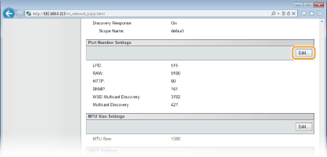
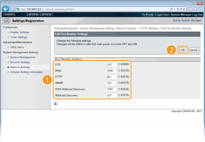

Changing Port Numbers
Ports serve as endpoints for communicating with other devices. Typically, standard port numbers are used for major protocols, but devices that use these port numbers are vulnerable to attacks because these port numbers are well-known. To enhance security, some network administrators prefer to change the port numbers. When a port number has been changed, the new number must be shared between communicating devices, such as computers and servers. If a port number changes, set it on this machine as well.
1
Start the Remote UI and log on in System Manager Mode. Starting the Remote UI
2
Click [Settings/Registration].

3
Click [Network Settings]  [TCP/IP Settings].
[TCP/IP Settings].

4
Click [Edit] in [Port Number Settings].

5
Change the port number, and click [OK].

[LPD]/[RAW]
Change the port used for LPD printing or RAW printing. For details about each protocol, see Configuring Printing Protocols and Web Services.
Change the port used for LPD printing or RAW printing. For details about each protocol, see Configuring Printing Protocols and Web Services.
[HTTP]
Change the port used by HTTP. HTTP is used for communications over the network, such as when you access the machine via the Remote UI.
Change the port used by HTTP. HTTP is used for communications over the network, such as when you access the machine via the Remote UI.
[SNMP]
Change the port used by SNMP. For details about SNMP, see Monitoring and Controlling the Machine with SNMP.
Change the port used by SNMP. For details about SNMP, see Monitoring and Controlling the Machine with SNMP.
[WSD Multicast Discovery]
Change the port used for WSD multicast discovery. For details about WSD, seeConfiguring Printing Protocols and Web Services.
Change the port used for WSD multicast discovery. For details about WSD, seeConfiguring Printing Protocols and Web Services.
[Multicast Discovery]
Change the port used for SLP multicast discovery. For details about SLP, see Configuring SLP Communication with imageWARE.
Change the port used for SLP multicast discovery. For details about SLP, see Configuring SLP Communication with imageWARE.
6
Restart the machine.
Turn OFF the machine, wait for at least 10 seconds, and turn it back ON.